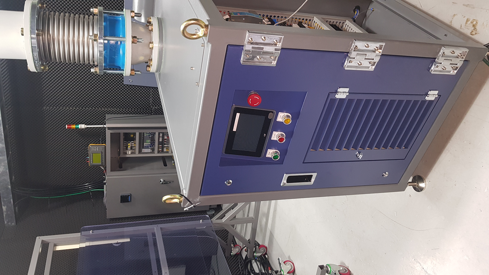

High-Speed Turbo Blowers
 Centrifugal compressors use a rotating disk or impeller in a shaped housing to force the gas to the rim of the impeller, increasing the velocity of the gas. A diffuser (divergent duct) section converts the velocity energy to pressure energy. They are primarily used for continuous, stationary service in industries such as oil refineries, chemical and petrochemical plants and natural gas processing plants. Their application can be from 100 horsepower (75 kW) to thousands of horsepower. With multiple staging, they can achieve high output pressures greater than 1,000 psi (6.9 MPa). This type of compressor, along with screw compressors, are extensively used in large refrigeration and air conditioning systems. Magnetic bearing (magnetically levitated) and air bearing centrifugal compressors exist. Many large snowmaking operations (like ski resorts) use this type of compressor. They are also used in internal combustion engines as superchargers and turbochargers. Centrifugal compressors are used in small gas turbine engines or as the final compression stage of medium-sized gas turbines. Centrifugal compressors are the largest available compressors, offer higher efficiencies under partial loads, may be oil-free when using air or magnetic bearings which increases the heat transfer coefficient in evaporators and condensers, weigh up to 90% less and occupy 50% less space than reciprocating compressors, are reliable and cost less to maintain since less components are exposed to wear, and only generate minimal vibration. But, their initial cost is higher, require highly precise CNC machining, the impeller needs to rotate at high speeds making small compressors impractical, and surging becomes more likely. Surging is gas flow reversal, meaning that the gas goes from the discharge to the suction side, which can cause serious damage, specially in the compressor bearings and its drive shaft. It is caused by a pressure on the discharge side that is higher than the output pressure of the compressor. This can cause gases to flow back and forth between the compressor and whatever is connected to its discharge line, causing oscillations.